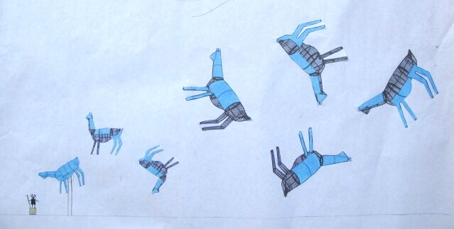
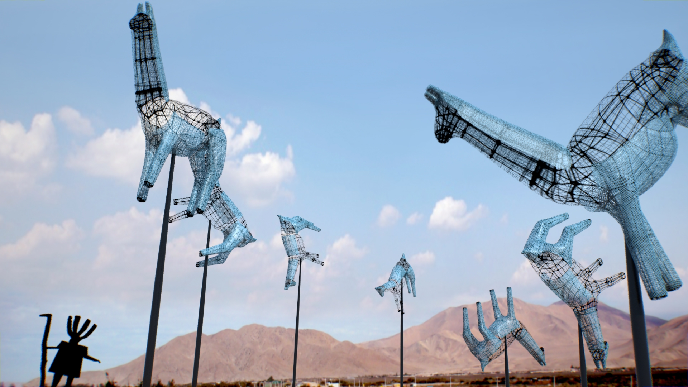

Proyecto · Caravana
Pieza de Paisaje / Caravana
Proyecto de intervención de una rotonda en las afueras de Copiapó: una caravana de camélidos en fierro, montados sobre postes a distinta altura, en alusión a la iconografía rupestre de camélidos propia del arte precolombino de Atacama, junto a una figura humana de estilo similar.



UbicaciónREGIÓN DE ATACAMA
27°22′S · 70°20′O